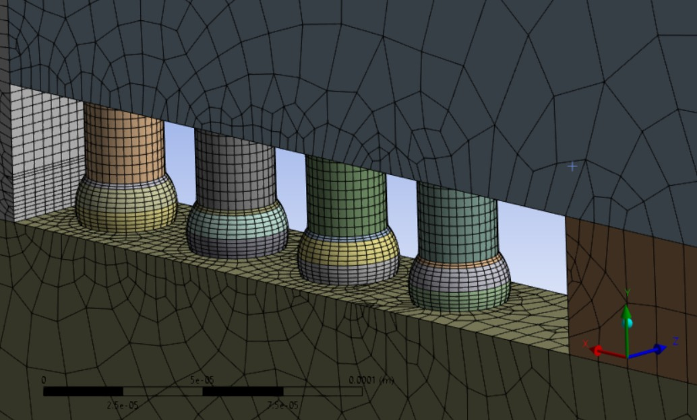
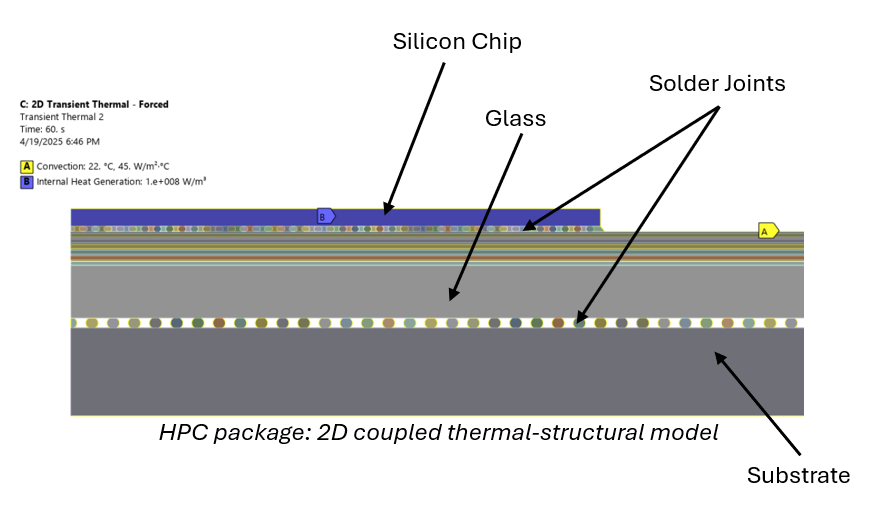
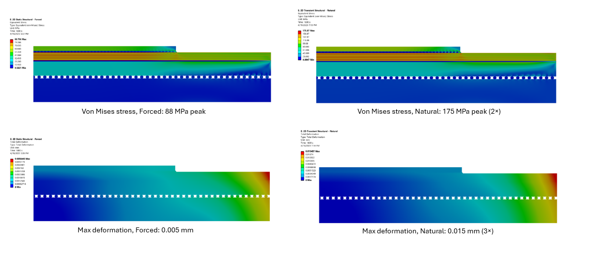
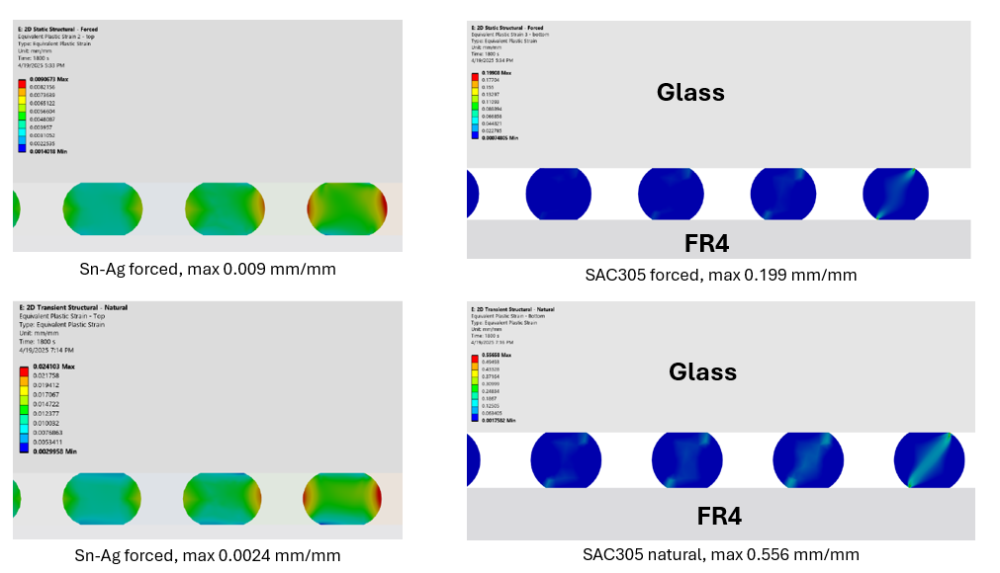

PROJECT OVERVIEW
With the rise of high-performance, miniaturized electronics, ultra-fine pitch flip-chip assemblies using glass core substrates are emerging as next-generation packaging solutions. Industry is moving toward thinner dies, finer pitch interconnects, and glass core substrates — all of which intensify the dominant reliability challenge: low-cycle fatigue failure of solder joints under cyclic thermal loading.
To address this, I developed a finite element modeling framework in two phases. Phase 1 is a JEDEC thermal-cycling screen of the Level 1 assembly (die-on-glass) at 50 µm solder bump pitch, used to rank glass thickness and underfill coverage. Phase 2 replaces the prescribed uniform temperature with real operating physics — internal heat generation in the die plus convective cooling — and extends the stack down to the FR4 board, so the model can answer what the screening model structurally cannot.
The two phases disagree about which joint fails first, and that disagreement is the point of the study: the isothermal screen identifies the corner die-side bump, while the coupled model shows the board-side SAC305 joints carrying roughly 20× more plastic strain. Cooling architecture — a system and enclosure decision — turns out to be a first-order mechanical reliability lever.
ANALYSIS STRATEGY
Two-stage approach: a fast screening model to rank design variants, followed by a physics-informed model to identify the true failure driver.
| Model | Physics | Purpose |
|---|---|---|
| Phase 1 — JEDEC thermal screen | Uniform temperature cycle | Fast design ranking |
| Phase 2 — Coupled thermo-mechanical | Internal heat generation + convection | Identify true failure driver |
HARDWARE STACK & MATERIALS
| Layer | Material | Role | Governing property |
|---|---|---|---|
| Silicon die | Si | Compute element / heat source | Low CTE |
| Substrate core | Glass | Interconnect routing | Moderate stiffness, low CTE |
| Die-side interconnect | Sn-Ag | Electrical + mechanical | Viscoplastic (Anand) |
| Board-side interconnect | SAC305 | Electrical + mechanical | Viscoplastic (Anand) |
| PCB | FR4 | Board-level routing | Higher CTE |
The reliability problem lives in the CTE spread across this stack: silicon and glass expand slowly, FR4 expands quickly, and the solder in between absorbs the difference as cyclic plastic strain.
FAILURE MODE & RISK CONTEXT (FMEA-Informed Framing)
Failure Mode
Low-cycle fatigue at solder joints due to plastic strain accumulation
Root Cause
CTE mismatch between silicon, glass, underfill, and solder materials
Effect
Cracking at die corners → electrical disconnect → long-term failure
Risk Level (RPN)
135 (High) = Severity (9) × Occurrence (5) × Detection (3)
Detection & Mitigation
Detection: FEM simulation (ANSYS), Anand viscoplastic modeling, validated via corrected Suhir model; coupled transient thermal → static structural analysis to resolve gradients the isothermal screen hides
Mitigation: Parametric FEM analysis on glass thickness and underfill coverage, plus cooling architecture selected as a reliability parameter rather than a thermal-compliance afterthought
PHASE 1 — JEDEC THERMAL SCREEN
Objective: rapid reliability screening with limited operating data. The package is cycled per JEDEC JESD22-A104 Condition B (−55 °C to +125 °C) for 11 cycles, with temperature imposed as a uniform body load. No internal heat generation is modeled — thermal gradients exist only through the boundary condition.
FATIGUE ANALYSIS
- Accumulated plastic strain extracted from stabilized cycles
- Fatigue life estimated using: Kanchanomai model and Andersson model
- Conservative design chosen by selecting lower of the two predictions
MATERIAL BEHAVIOR
- SnAg solder modeled with Anand viscoplasticity
- Copper: bilinear isotropic hardening
- Glass, silicon, ABF-Cu, underfill: temperature-dependent elastic models
- Thermal cycling from –55°C to 125°C applied over 11 cycles (JEDEC JESD22-A104 Condition B)
PHASE 1 — GEOMETRY & MESH
2D plane strain model of diagonal flip-chip cross-section

2.5D plane strain model of diagonal flip-chip cross-section
- 2D plane strain model of the diagonal flip-chip cross-section, cut on diagonal half-symmetry
- 10 mm die on a 25 mm glass substrate, 50 µm pitch Sn-Ag solder bump geometry
- Quad-dominant mesh with shared topology at material interfaces for stress continuity
- Local refinement in the solder, ABF and Cu layers near bump corners — the region where plastic strain accumulates
- PLANE183 elements used for nonlinear plasticity and viscoplastic behavior
Cutting along the package diagonal is deliberate: it puts the corner bump — the one at maximum distance from the neutral point (DNP), and therefore the fatigue-limiting joint — inside the modeled plane.
PHASE 1 — PARAMETRIC DESIGN OPTIMIZATION
VARIABLES STUDIED
- Glass thickness: 200 µm, 300 µm, 400 µm
- Underfill coverage: None, Half Fillet, Full Fillet
FINDINGS
- Stress trend: Non-linear; peaks at 300 µm then slightly decreases
- Deformation trend: Monotonically decreases with thicker glass
- Fatigue life: Best case at 400 µm glass + half underfill (Nf ≈ 2,494 cycles)
PHASE 1 — OPTIMIZATION RESULTS
| Configuration | Δεp | Nf (Kanchanomai) | Nf (Andersson) |
|---|---|---|---|
| 200 µm glass, no underfill (baseline) | 1.95E-2 | 1,908 | 2,002 |
| 300 µm glass, no underfill | 1.87E-2 | 1,997 | — |
| 400 µm glass, no underfill | 1.83E-2 | 2,043 | — |
| 400 µm glass, half underfill (best) | 1.67E-2 | 2,249 | 2,494 |
| 400 µm glass, full underfill | 1.73E-2 | 2,173 | 2,381 |
- Highest plastic strain consistently occurred in the corner solder joints, consistent with DNP-driven fatigue behavior
- Thicker glass → less warpage → lower accumulated strain
- Half fillet outperforms full fillet — the partial fillet redistributes strain away from the critical corner instead of stiffening the whole joint
Von Mises Stresses at Package end for No Underfill case
PHASE 1 — WHERE THE SCREENING MODEL STOPS
The whole Phase 1 model rests on one assumption: a prescribed uniform body temperature. Every point in the stack sees the same temperature at every time step. That makes the model fast and useful for ranking design variants — and structurally incapable of answering anything that depends on a temperature difference across the package.
What this model resolves ✓
- Corner ball identified as the critical joint
- Relative ranking of glass thickness
- Effect of underfill fillet geometry
Appropriate for design screening.
What this model cannot answer ✗
- Actual die temperature during operation
- Thermal gradient through the stack
- Difference between top and bottom joint behavior
- Impact of cooling strategy on fatigue life
PHASE 2 — UPGRADING THE PHYSICS
Goal: determine how cooling condition affects solder fatigue life. Instead of prescribing temperature, the die generates heat and the package rejects it through a convective boundary — so the temperature field becomes an output of the model rather than an input to it. The stack is also extended down through the board-side SAC305 joints to the FR4 PCB.
| Aspect | Phase 1 | Phase 2 |
|---|---|---|
| Thermal load | Prescribed uniform ΔT | Heat generation + convection |
| Temperature field | Isothermal | Spatially resolved, transient |
| Thermal gradient | Zero (assumed) | Physically captured |
| Structural input | Direct body temperature | Mapped nodal temperatures |
| Cooling condition | None | Forced (45 W/m²K) and Natural (20 W/m²K) |
| Solder model | Anand viscoplastic | Anand viscoplastic |
| Fatigue method | Kanchanomai + Andersson | Kanchanomai + Andersson |

HPC package: 2D coupled thermal-structural model, with internal heat generation in the die and a convection boundary on the package
PHASE 2 — MODEL SETUP
HEAT GENERATION
- 100 W/cm³ volumetric heat generation in the silicon die
- Duty cycle: 60 s ramp / 60 s peak / 60 s cool / 60 s off (240 s per cycle)
- 10 cycles solved; the stabilized response is extracted from the 10th cycle
COOLING & SOLVE SEQUENCE
- Forced convection: h = 45 W/m²K
- Natural convection: h = 20 W/m²K
- Step 1: Transient Thermal → stabilized nodal temperature field
- Step 2: Import cycle-10 field as a body load → Static Structural
PHASE 2 — THERMAL RESULTS
Forced convection — h = 45 W/m²K
Peak die temperature 64 °C, uniform distribution and thermally stable across the cycle.
Natural convection — h = 20 W/m²K
Peak die temperature 107 °C, 43 °C hotter than the forced case, with a correspondingly steeper gradient through the stack.
The same silicon, the same power, the same package — only the enclosure's ability to move air changes. That single boundary condition sets everything downstream.
PHASE 2 — STRESS & DEFORMATION

Von Mises stress (top) and total deformation (bottom) — forced convection at left, natural convection at right
| Quantity | Forced convection | Natural convection | Ratio |
|---|---|---|---|
| Peak Von Mises stress | 88 MPa | 175 MPa | 2× |
| Max total deformation | 0.005 mm | 0.015 mm | 3× |
A steeper temperature gradient produces a larger mismatch strain between the low-CTE die/glass and the high-CTE board, and the plastic strain that the solder has to absorb rises with it.
PHASE 2 — PLASTIC STRAIN & THE CRITICAL FINDING

Equivalent plastic strain — die-side Sn-Ag joints at left, board-side SAC305 joints at right; forced convection top row, natural convection bottom row
Critical finding
- The bottom SAC305 joints carry roughly 20× more plastic strain than the top Sn-Ag joints (0.199 vs 0.009 mm/mm forced; 0.556 vs 0.024 mm/mm natural) — a failure location that is completely invisible in the isothermal Phase 1 model
- Board-level reliability therefore becomes sensitive to cooling strategy and board mounting conditions, not just to package-internal design choices
PHASE 2 — FATIGUE LIFE & DESIGN CONCLUSIONS
| Joint location | Cooling | Nf (cycles) |
|---|---|---|
| Top Sn-Ag (die-side) | Forced | 10,814 |
| Top Sn-Ag (die-side) | Natural | 2,846 |
| Bottom SAC305 (board-side) | Forced | 1,491 |
| Bottom SAC305 (board-side) | Natural | 324 |
- Bottom SAC305 joints govern package life — they are the weakest link in all four cases
- Forced convection extends bottom joint life by 4.6× (324 → 1,491 cycles)
- The natural convection case shows plastic ratcheting rather than a stable cyclic response, meaning strain keeps accumulating cycle over cycle instead of settling into a closed hysteresis loop
- Thermal management is a mechanical reliability lever, not just a temperature-compliance exercise
SYSTEM-LEVEL IMPLICATIONS
Hardware like this ships inside automotive compute modules, robotics compute stacks, and rack-mounted AI servers — environments with continuous power dissipation, forced airflow cooling, thermal gradients across boards, and mechanical vibration and shock. In each case the chain runs the same way:
- Power dissipation → thermal gradients in the system
- Material expansion mismatch → constrained structural deformation
- Thermal strain → loads transferred to mounts, fasteners, and interconnects
- Thermal cycling → fatigue risk at critical hardware interfaces
The practical consequence for enclosure and system design: a decision made at the chassis level — fan versus passive, airflow path, board standoff and mounting stiffness — propagates all the way down to plastic strain in a 50 µm solder joint. In this study that decision was worth a 4.6× difference in the life of the joint that governs the package.
IMPACT
This study offers a simulation-based strategy to guide the design of reliable, high-density flip-chip assemblies for next-gen electronics. It pinpoints the material and structural interactions that drive premature failure and proposes physically grounded optimizations to extend device lifespan.
From a systems engineering perspective, the work provides a risk-reduction framework that integrates failure identification, sensitivity analysis, and simulation-validated design tradeoffs — critical for manufacturable, robust packaging solutions.
Key takeaways
- Screening models are good at exposing design sensitivities, but they can miss the operational physics entirely — Phase 1 never saw the joint that actually governs life
- Coupled thermo-mechanical analysis captures how thermal loads translate into structural strain, and is worth the extra solve cost once a design narrows
- Cooling architecture significantly influences the mechanical reliability of electronic hardware, which makes it an enclosure design constraint rather than a purely thermal one
- System-level design decisions directly affect stress in mounted components and interconnects
FUTURE WORK
- Extend to 2.5D and 3D models for improved Z-axis accuracy
- Re-run the Phase 1 parametric sweep (glass thickness, underfill coverage) under Phase 2 coupled physics, to check whether the isothermal design ranking still holds once gradients are resolved
- Sweep the convection coefficient continuously rather than at two discrete points, to find where the bottom-joint life curve turns over
- Model board mounting stiffness and standoff explicitly — the SAC305 joints are sensitive to how the PCB is constrained
- Investigate arc fillet profiles and organic substrates
- Study standoff height variations and multi-layer ABF effects
- Add combined thermal + vibration loading, representative of automotive and robotics duty cycles
- Correlate results with experimental data from thermal cycle tests